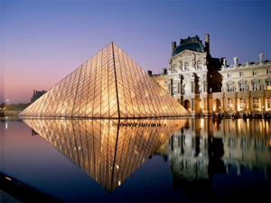

Paristechinois
学校篇
签证好了，终于可以开始写总结了。其实也不是法国申请总结啦，主要是EP的申请经验而已。说来很惭愧，被录取之前，几乎什么都不懂，就糊里糊涂被录了。注意！这不是炫耀，只是想告诉学弟学妹，一开始什么不懂，没有问题。因为经验有限，估计有些地方我的理解是有问题的，有错误的地方希望各位同学不吝指出，以免学弟学妹们误入歧途。
首先简要介绍一下法国的学制。法国高考BAC以前的教育基本和国内一样。法国学生考过BAC后继续念书的话有两条路或更多：几乎每个法国人都可以去上大学（université），这个是综合教育，和国内的大学差不多。这里面也有世界著名的大学。第二条路就是上大学校（grande école），这个是主要以工程，商学，管理为主。一看就知道都是赚钱的行业，所以这个对于法国学生就很难了，他们进大学校除了之前的BAC之外，要经过很难的入学考试，因为竞争激烈，一般都要准备两年左右。对于中国学生就更难了，当然这是对于中法9＋9项目所列之外的学校的中国学生而言；相反，如果是这九所学校的学生：清华大学、北京大学、中国农业大学、复旦大学、同济大学、上海交通大学、南京大学、东南大学和南京农业大学，就显得相对容易了。注意！这个容易是相对法国学生的，并不是说这个申请过程本身就十分简单了，仍然有相当的难度。在上海和南京，去法国的学生相对比较多，竞争也是比较激烈的。如果是北京的同学，这就很简单了，几乎没有竞争的。
如果申请上了ParisTech中的一所，读出来就是工程师了。不同学校读书年数不同。对于EP，一般要读四年。头四个月上语言学校学习法语（homestay），此后住学校漂亮的宿舍，后面七个月学习大杂烩，物理数学金融化学生物都学一点，这就是第一年。第二年开始分专业，进行专业学习（除了名气和世界排名之外，这是EP最吸引人的地方，物理系的学生几乎不费吹灰之力就成功转系了）。第三年开始进公司实习，拿到EP硕士学位。第四年去法国另外一所大学或大学校学习，拿第二个硕士学位，方向相近或相同，厉害的人可以两个方向差很多；也可以继续实习。如果录了，立刻提供全奖：学费加720欧生活费每月。没有录了不给奖学金一说。如果够厉害，或者运气够好，拿到艾菲尔奖学金就完美了，可以说会富得流油，以后在法国找工作也因此贴金。但是打工或是实习期间任何奖学金都会停发。当然有厉害的人可以缩短四年这个时间跨度。可以大三上就申请，大四就过去了，然后读四年，这样一来，大四的很多事要大三下就完成，比如毕业论文，大三下会非常非常辛苦；大四上申请的话，也可以自动跳级，当然水平很高才可以。这样就直接从第二年开始读。但是语言学校还是要上，所以要比正常提早两个多月过去法国，没有毕业暑假了。以上这两种特殊情况都是有先例的。
本篇的最后，介绍一下EP，算是做做广告吧。巴黎综合理工学院创建于法国大革命时期的1794年，学院的校旗和格言则为拿破仑所赠：“为了祖国、科学和荣誉！”。巴黎理工大学,经常被昵称为X（X来自其校徽，代表两架交叉 在一起的大炮） 是法国最重要的工程师大学。EP在USnews上的排名一般稳定在37名左右。男女比例大约为6：1。EP的学生必须在校住宿，为此他们每人都拥有自己的房间。这些房间均配有电话机和校园内部网的接口。专业方向分为：应用数学，生物，化学，物理，机械，计算机科学，数学，经济学，人类和社会科学，近代语言学。最后，EP有着丰富的体育运动项目，其中有击剑、柔道、游泳、马术等16项体育运动，学校规定学生至少要选择一项体育运动，每周必须要有6个小时的体育锻炼时间。
申请篇
申请法国ParisTech其实说白了，就是看成绩。当然不是全看成绩。只能说80％吧。因为上届物理系有个女生年级第四，被mines拒了；这届数学系有个女生名次很也很高，过了笔试参加了EP的面试，但是最后被拒了；本届有个男生物理系排名第十二，笔试之后没有面试；本届还有一个男生物理系排名年级第七，糊里糊涂报了EP的online申请，但是他不想去，也没有在学校推荐表中填上EP，但是笔试之后，EP居然催他提交纸质材料，那个时候都已经过了纸质材料截止日期。举这些例子，无非就是想告诉大家，去ParisTech排名很重要，但是不是唯一的因素，只有80％左右。当然，对于那个年级第四的被mines拒了的女生，我想说的是，可能她不该报mines，因为她毕竟是年级第四，很有可能mines怕她拿自己当备胎，所以干脆不要她；她应该勇敢地报EP的。所以给大家第一条建议：要去法国ParisTech的同学，排名有前十的，都应该勇敢的地报EP。其实这没什么，真的没有录上的话，只是比别人多一场面试罢了（ParisTech一共只有一场笔试，面试有几个学校要分开面试）。有一点非常重要，EP一个人一生只能申请一次，失败了就再也不可能了。
下面着重介绍申请EP。EP一般喜欢数学系和物理系的学生。在南京大学，一般只有数学系和物理系的学生能申请上。但是上海交大和复旦的学生中，有信息工程的也可以申请到。所以对于南大其他系的同学，如果物理数学，特别是数学虎的同学可以试一试。对了大家很关心一点，申请这个学校要不要法语基础。明确地告诉大家，不需要！全部笔试面试都是用英文进行。一定是录了你之后，才要求你学法语的，那是为了过签证用的。但是，如果你会法语的话，那肯定可以给你的面试和硬件材料加分。铁了心要去EP或是ParisTech的学生，如果有条件，可以大二大三在学校辅修法语，或者去法语联盟学习法语。去法语联盟有一个好处，就是录取之前学的课时是可以算数的，即便不去ParisTech，干什么法国政府都是承认的；坏处就是交通恐怕不方便，因为法语联盟在草场门，和鼓楼有一点距离，在广州路门口搭乘132，91或是65路都可以。
首先是Online申请，把网址也给大家http://www.polytechnique.edu/，有英文和法文切换。把表格在线填好，把要求的材料和推荐信网上递交之后，再把要求的纸质材料按照给定的地址邮寄过去就可以了。邮寄材料可以申请EP的同学一起寄。在汉口路的图灵，找TNT就可以。一定要注意Online材料，推荐信提交，还有纸质材料邮寄的截止时间。大概都是十月初吧，总之大家及早准备。关于材料，有几点要注意：第一点，ParisTech的申请，需要护照和出生公证，所以大家在八月份就该开始办护照和法文版出生公证。大概需要两个礼拜左右。第二点，关于Purpose of Statement，清单有要求，大家对着清单上的问题一条一条回答就可以了。估计上网查点资料就够了。第三点是如果有奖学金证明的话，一定要放在里面，可以免申请费。第四点是英语要求，GRE general和TOEFL都可以，甚至有人用英语四级证书也过了。但是网站上要求的是纸质成绩单的扫描件，所以这个要及早准备。不需要通过ETS送分的。第五点最重要！在学校推荐的时候只填EP的同学，要在ParisTech的表格里面也填遍。网申的时候ParisTech和EP的网申都要进行。如没有在ParisTech推荐表里也填一遍，就会出现EP的网申通过，ParisTech的网申失败的尴尬局面。当然也没有什么后果，面试笔试照样去参加，但是你会不安，影响心情。网申ParisTech的时候，把EP的材料直接往上面放就可以了，但是记得要把EP全部改成ParisTech，比如Why EP改成Why ParisTech。
弄完材料，就开始准备笔试。笔试一般在十月下旬的东南大学四牌楼校区进行。笔试是ParisTech包括EP一起考的。笔试考的内容有生物，物理，力学，数学，信息科学，化学，电子等等。不是要求大家全部做完；而是要求大家按照自己的学术背景有选择地完成。比如我是物理系的，我就做物理（1），物理（2），数学（1），数学（2），还有力学。物理（1）主要是普通物理，物理（2）涉及四大力学，数学（1）主要是大学数学的内容，主要是线性代数和数学分析，数学（2）主要是近代数学，群，环什么的。答对一题得一分，答错扣0.25分，不答不得分也不扣分。时间3个半小时，全部是英文选择题。至于复习，物理翻翻教科书，其实物理系如果前十的话，物理基本不用复习。主要是数学，两本大数估计已经扔了一两年了，这个要好好复习，证明过程要看要掌握，面试有用。对于近代数学，考得其实不多，如果实在想看，花半个月到一个月的时间看看也无妨，看到环就差不多了，关键是弄清概念，看到题目知道它在说什么。复习数学可以用GRE sub中的math来练习，效果不错。物理系的同学如果选修了模拟电路和数字电路，电子方面的题目就可以尝试下，采样定理会考的。
申请ParisTech的话，考完笔试一定有面试，仍在东南大学四牌楼校区。如果只申请了EP的话，这个面试不参加，等email的通知参加在上海的面试。这个email一般在笔试后2个星期内收到。面试时间一般是十一月底，在上海同济大学。参加面试其实可以不穿正装的。对于这个面试，物理系的同学基本不需要复习物理，狂看大学数学就好。证明过程真的很重要而且要求能用英文表述。很多数学词汇也许你看了认识，但是这里要求你说出来。面试全程以英文进行，分三个部分，每部分45分钟，两部分之间间隔15分钟休息时间。出题后，都会先给20分钟自己在一个小房间里先准备，然后开始45分钟的面试。三部分的老师不同。给老师讲题的时候有一个黑板，你在黑板上讲解即可。
第一部分是数学，会有两个题目，一道数学分析的证明题，一道线性代数的证明题。法国人也知道我们微分方程不行。这两道题不会超出《大学数学》的范围，所以大家真的没有必要专门看数学分析。但是线性代数还是有做习题集的必要。题目不难，关键是不要紧张。我的数学分析题目是证明某个关于的式子f（x，y）＝0中是存在的，第二问是给个近似条件，让我求出具体的式子y＝g（x）。这个式子，很明显不能写成y＝g（x），但是可以写成x＝g（y），所以只要证明x＝g（y）有反函数就可以了，换言之，证明x＝g（y）是单调的。然后我把导数一求，就出来了。可是我第一眼看错了，以为f（x，y）＝0是个微分方程，要我证明解的存在性，我就蒙了，相信没几个人记得李普希兹条件吧，结果我对法国老师说我不会，他说你那第二问你会做吧？我说会，他就说你先做第二问吧。结果仔细看题才发现不是微分方程。所以千万不要紧张。我的线性代数的题目是证明AB和BA是相似的，A和B都有特殊条件的。结果找个特殊解就可以了，而我总以为是要证明存在某个矩阵使得A和B满足相似性条件，浪费了大量的时间。具体的题目都不记得了，抱歉。写在这里只是想告诉大家题目不会很难。两道题我都是开了个头，做到70％的时候写不下去了，这个时候，老师很友好地给我讲解提示。所以不会真的不用紧张，老师会提示你。
第二部分是物理题。他们会根据你的专业背景给你题目，我的专业是光学，所以一道是电磁学，一道是光学。同样做题的时候他们会提示你。物理题对于物理系的同学一般没有任何问题。讲完了会剩很多时间。然后老师就给你讲这个题目的应用背景，果然很工科啊。你在这个部分之后一般很愉快。不仅做出了题目，还学到了很多知识。电磁学的题目是一个线框在一个给定的发散形的磁场中的运动。要我求加速度。这个高中生都会！但是它会把很多条件一般化，比如一开始给矩形，后来任意形状的线框了。求出来的时候，我写一个公式U＝BLV，他就问V是什么意思，我说是线框的边的速度，他说，这表示线框是一个刚体，否则要写成积分。我很汗，法国人数学真的超严谨！然后说用这个模型我们可以用来测量这个磁场，他问我线框加速度怎么测，我说用高速相机，又问我公式中的重力加速度怎么测量，我说用单摆，我其实都不会用英文说单摆，只在黑板上画了一个单摆，老师瞪了半天，说why not？所以给我一个启示，对于物理题面试，大家要有一点点实验测量的知识，知道什么用什么测。第二题是用一个直角棱镜测指纹的模型。原理就是手指贴在棱镜斜边上，指纹就是手上的凹凸花纹，有的地方和玻璃接触了，有的地方没有接触，所以接触和没有接触的地方的全反射临界角不一样。光一定角度打入，某些地方全反射，某些地方不全反射，所以出射光强就不均匀了，用一个探测装置接收，就可以采集指纹。题目就是画了一个示意图，让我解释上述的原理。后来老师问我用什么接收信号，我说用CCD，他又问怎么提高分辨率，我说要提高集成度，他说不是，然后问我CCD的全称，我说不知道，他就告诉我，Charge Coupling Device，然后由此解释了一大堆如何提高分辨率的原理，说实话我一点都没有听懂，只是装着样子不断点头。
第三部分是文献阅读。给一篇科技文献，让你看20分钟，然后给老师讲解大意，和你对此的观点。我看得是太阳能的利用。看我后，我就用十分不流利的英语把这篇文章retell了一遍。这个其实不重要，重要的是后面的随意谈话！随意谈话的就是问问题，老师按照一张纸的问题一道一道问你。所以同一届的问题一定会一样，不同届应该不一样。问的问题包括：为什么法国 ?为什么EP ?你想学什么 ?你要选什么课程？学习过程中你会遇到很多困难，如何面对 ?学成后打算如何？工作的话，你知道法国有什么著名企业么？有没有申请美国？你会法语么？等等，大部分是SP上的内容，记熟就好。注意！听懂一个问题再回答，不要想当然。我开始听错了，听成他们没有光学课，我就说我想学经济和核能，结果老师说，你SP上说要学光学的，现在说学这些不是矛盾么？连paradox这个词都出来了，我吓得一身冷汗，赶忙说我误解了……说真的，真的很怕他们因此怀疑我的motivation，在申请的时候这可是大是大非的问题。最后他们说我有没有问题，我问了三个：一个是读博士方便么，要考试么？一个是双硕士专业可以分很开么？一个是请介绍一下ELI（Extreme Light Infrastructure 这是一个学校里的新科研项目，EP网上查到的，我在没话找话）和我能不能在读书期间参加这个项目？老师介绍了一通，我根本没听懂，然后老师说我将来会很忙，很难有时间参加。到此我的面试结束了。所以真的是成绩决定80％，我如此差的面试都可以录上，大家应该该很有自信了。
最后就是十二月中下旬出结果。其实一点都不妨碍GRE sub的考试和米国的申请。只是offer的回复期限很短，一个礼拜左右，最好不要此时接受了，然后三四月再拒绝，很损人品的。接受offer除了要回复邮件外，别忘了在EP网申系统里也要确认接受offer。
签证篇
接受offer之后，可以痛快玩半个月，因为别人的申请工作都还没有结束。之后痛苦的日子开始了。大概一月初就要开始在法语联盟上法语课了。这个不能调整，不能去其他学校学，ParisTech不同意，另外在南京法语教育中心就在法语联盟里面，便于咨询签证事宜；当然在其他学校的话，就不方便了。每天白天5个小时（每周某一天6个小时），每周放假两天，这样就要上4个月左右。只放两次大假，寒假20天和五一节9天。每天的作业量平均20分钟。这样大四下的时候，既要学法语，考法语，办签证，还要做毕业论文，很苦。这里提醒大家，大四上刚开学的时候，补选公选课的时候，一定要看看自己文科艺术学分是不是够，不够的话，一定要在大四上修完，否则拖到大四下会很痛苦！
学法语的同时，从三月份开始，要开始进行Campusfrance预签证程序了。网址为http://www.cdgdc.edu.cn/rzzx/index.jsp。这个程序非常繁杂。首先按照预签证材料清单准备纸质材料。上着法语班的时候，要开始办教育部认证了，这个预签证要用。这个教育部认证办成绩或在读证明都可以，因为时间跨度很长，有一个月左右，建议三月份开始办。流程参见教育部学位与研究生教育发展中心的官方主页http://www.cdgdc.edu.cn/rzzx/index.jsp，要通过人民银行汇款和寄材料。此外，预签证需要中法9＋9项目的合作协议，这个协议要到树华楼一楼领取复印件。另外，预签证材料清单上要求的成绩单必须是包含大四上成绩的成绩单，中文的就可以；在读证明必须是在大四下新开的，而不是最初在大四上开的那份（办认证的时候可以用这一份）。三月底四月初也必须开始订机票了，签证要用。
然后是通过Campusfrance网站来进行考试TCF&TEF的报名。交考试费用也要通过人民银行汇款，注意！汇款后一定要在这个网站进行汇款确认，否则还是不能预约考试。他们进行汇款确认后，就可以预约考试时间了。建议在六月初（论文答辩最好在五月底，和考试时间有十天左右差距）。考试的要求就是TCF300 /699，TEF350/900。只要平时都来上课了，考试前有350个小时的学习时间，肯定可以达到这个分数。没达到这个要求似乎没有后果，我们这一届有个去telecom的女生，没有达到TEF350/900，现在人都在法国了。关于这个考试，简单介绍如下：TCF和TEF都相当于法语托福。在考试过程中，只考察听，读的能力。全部是选择题。TCF和TEF都是三大部分：听力，阅读，语法和词汇。TCF和TEF不同点在于TCF没有倒扣分，TEF错了题会倒扣分。TEF的题型更丰富。TCF和TEF都是在计算机上进行，都是考完就当场出成绩。考试在上海长宁区的武夷路上的世星大厦上的法语联盟（上海法语教育中心）中进行。附近有很多宾馆，地铁站靠近3、4号线的中山公园，打的到火车站25元左右。在考试之前，一定要把Campusfrance要求的纸质材料和预签证汇款工作完成（在递交纸质材料之前要完成预签证费用汇款，一样是通过人民银行，汇完款同样要在网站上进行汇款确认。），然后纸质材料由来上海考试的人交给考试地点的工作人员。这样就不用邮寄了，既省钱又省时间。
考完试后，当场出成绩后，赶紧下楼复印一份交给工作人员。到此，回去等一两天，Campusfrance的程序就彻底结束，系统就会通知大家预约签证了。ParisTech的同学一般都是免面试的。注意！Campusfrance和大家联系都是用系统邮箱，不是大家各自的邮箱。
预约到签证中心签证的时间必须在出发前的三个月之内。打电话预约的时候要记得Campusfrance系统通知大家可以进行预约的日期，系统要凭这个日期进行安排。预约后，按照签证清单把需要的签证材料一样一样准备好。关于签证事宜的网站地址为http://www.vfs-france.com.cn/chinese/index.aspx。材料清单在这里下载，清单里的两个签证表格也在这个网站下载。申请签证的进度也可以在这个网站查到。这个时候机票该是买好了的，因为签证材料清单中包括这个。另外清单中间虽然没有身份证复印件和翻译件以及原件，实际上是要带的。因为还要求父母的户口簿，所以请及早请他们寄过来。有学校奖学金的话，就不需要父母的工资收入证明，只要银行存款证明（4300欧元）即可，有政府奖学金的话，连这个都不需要。另外，交上去的原件材料最好都复印一份备份，以防要用。签证的具体流程如下：到了法国签证中心（从上海火车站搭乘1号线在人民广场站下，西藏中路华旭广场，打的20多元）之后，直接进去，不管你的预约时间是10点半还是12点，都直接进去。这个时候一定要记得Campusfrance系统通知大家可以进行预约的日期，凭日期才能确认身份，实在不记得了就要打电话向上海法语教育中心（考TCF&TEF的地方）查询。进去之后就会领票，一般等10个人要1个小时，这时大家发现时间还有很多，于是可以拿出那两张签证表格坐在椅子上，从容地填写。不会和不确定的地方都可以向咨询台的工作人员询问。这两张表格带5份以上，防止写错。其中，一般OFII表格没有不确定的地方，事先可以填好并复印。快到的时候一定要注意，防止过号，否则过号了就要重新领票继续等待。交完材料付完钱后收好凭证，他们会问是大家自己来拿还是寄给大家。确认好领取方式后，就可以回家了。对了，政府奖学金都有要领特殊的号子，可以走绿色通道。注意！签证的时候只是递交材料，全过程用中文交流，只有“你的身份证呢？”这类问题，没有面试。万一拒签，请学校和使馆联系肯定就没有问题了。还有一点，这个时候往往也开始办户口和档案迁移了。如果递完材料前后几天拿到报到证和户口迁移证，最好在网上查到“护照已经送回签证中心“之后再去当地人才中心报到，以免领事馆查户口的时候出问题。这里给出两个有用的电话号码：上海法国签证中心02133303600，上海法语教育中心02162252000。
最后就是体检和打疫苗。体检在收到EP的email之后进行。去江苏省国际旅行卫生保健中心就可以了。坐地铁一号线到张府园下，从三号口出去向左过马路即到。体检和打疫苗要带上EP关于体检和疫苗要求的两张纸。Compulsory的项目一定要对照完成，千万别交给咨询台的医生，就不管事了。这里提醒大家，在做了常规体检之后，一定要加上甲肝抗体检验和乙肝两对半检验。打疫苗也是一样，要按要求把Compulsory的项目完成。他们可能会要大家打麻风腮，可是这不是必须要打的，所以可以不打。小时候的疫苗证（和父母户口簿一起寄过来）和大学的病历本要带上，这样有几针可以不用再打。填表的时候腰带上所有疫苗证（小时候的，大学的，这里发的），X光片，这里发的健康证明，和三份以上的EP体检要求表（中心的人很不负责，经常涂改填错，所以要三份）。注意！医生填好表格后，要自己仔细看清楚了，看所有的项目都填写了没有，确认没有问题再离开。
等到签证到手，就只剩下自己整理行李准备出发了。买行李箱最好团购，买两个30寸的，和一个20寸的。这三个箱子的价钱最好差不多。这样显得20寸的小箱子就贵了，那是因为，以后旅行什么的都要用这个小箱子，所以要买好的，经用些。
最后把我的邮箱给大家：shuchuan1987@126.com。大家需要任何材料的模板，和有任何的问题都可以联系我。
附录一：
这里简要地说一下，要是有牛人大三申请到了EP，该如何准备协调各种事宜。首先大三上要把文科艺术学分修满，然后是和五班一起修固体物理。申请EP的工作也要同时进行。若是申请成功，到了快寒假的时候，要在鼓楼校区内部或是附近找到住处，因为开始上法语课，不可能天天两头跑。大三下，各种课只能自学了，若是老师要考勤，一定要和老师协商好。近代物理实验不能缺席，每两周还是要来做一次，实验报告也要按时交。最难的就是寒假要找好做毕业论文的老师，然后找个容易的题目，混过论文答辩就可以了。然后学法语和法语考试，以及签证都要在大三下同步进行。这会非常苦，因为这样做和大四下相比，除了学法语，考试，办签证和写毕业论文，还多了几门核心课和指选课要考试（其中热统要写小论文）。因为时间非常紧，所以在时间的安排上，只能从法语课上挤时间了，所以大概只能上250课时左右，考试就凭机经过关而已，没有时间增强真功夫了。度过艰苦的大三下，进入大四，此时人已在法国，但是核心课还剩下大四上的近代物理实验。因为此时人在法国，这个课只能和老师协商，写个小论文及格算了。大四的专业指选课也只能这样了，因为到了EP重新选专业方向，所以这个就不重要了，所以大三学专业方向时以该专业方向大四课少为选择标准。然后在大四下的时候勤和国内同学联系，看看自己具不具备毕业资格，缺什么赶紧补什么。最后就是请国内的同学帮自己把毕业证，学位证，户口迁移证以及报到证领好，并且办好毕业成绩和毕业证学士证的翻译以及到教务处盖章的事宜。在大四下的暑假时，一定要回来，把户口的事宜办好，就大功告成了。
个人是非常佩服大三上申请EP的大牛的。顶礼膜拜！
附录二：
去法国学校ParisTech的花费包括申请费（有奖学金可免除），出生公证费，护照费，教育部认证费，排名证明，成绩单，在读证明费，体检疫苗费（这些加起来大概有2500RMB左右），学法语的费用（8000RMB左右），考试TCF&TEF（1200RMB），预签证费用（850 RMB），签证费（500 RMB左右，有国家奖学金或艾菲尔奖学金可免除），机票（5000RMB左右，有国家奖学金或艾菲尔奖学金可免除），存款证明（50000RMB左右，这个不用花掉，有国家奖学金或艾菲尔奖学金可免除），至少三次去上海三次的动车费用（600RMB左右）。
附录三：
下面附一个米国和法国的情况对比。这个可能会得罪别人，但是谨代表我的个人意见，如何抉择，还是看个人想法，看自己到底喜欢过什么样的生活。注意！法国主要指ParisTech。
米国排名高的大学在中国名气大；法国排名高的大学中国人不一定听过。
米国给奖学金很多；法国给的少。
米国奖学金只保证第一年，后面要自己争取；法国录了就每年给。
米国的科研环境和科研资金远远比法国好。
去米国博士毕业很难，要发paper，要跟老板打工；法国不跟老板，不用发paper，上课实习。
去米国申博士相对容易，有奖学金，申硕士给钱很难；去法国申硕士也给钱。
去米国申理科相对容易，转系很难；去法国转系相对容易。
去米国读完后转行难，一般留在学校做讲师或教授，继续做科研；去法国读完后，找工作相对容易，读书期间有大量实习机会。
去米国英语是现成的，而去法国要学法语，还要考试，花钱花时间；学好法语之后，这是一个职业优势。
去米国签证要面试，但是手续很简单；去法国没有面试，但是要进行预签证和签证，手续繁杂，时间跨度长。
作者简介：
舒川
2006-2010：南京大学物理学院
2010-2014: Ecole polytechnique
舒川的法国申请总结

2012年5月10日星期四